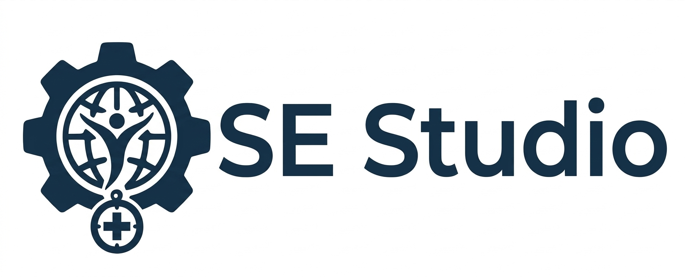

SE Studio combines the software engineering disciplinary pattern of engagement with the aims of BYU to create an experiential multi-semester program where students design, build, deploy, and manage enterprise quality software for a humanitarian purpose.
1. Program overview
SE Studio is a reusable three-course Software Engineering Studio program for a large team of junior university programmers. The program takes a socially valuable software concept from discovery through production while teaching professional software engineering, teamwork, design, quality, security, privacy, compliance, and responsible AI.
The program favors applications that are local-first, usable with intermittent connectivity, multilingual, accessible, open source, and deployable by communities without requiring a large institution or centralized database.

Students move through a continuous engineering cycle while contributing through different technical, design, quality, security, data, AI, architecture, and community-research roles.
1.1 Software Engineering disciplinary pattern
The entire program follows the recurring disciplinary pattern used in Software Engineering:
These activities are not only phases of a project. They are the program’s underlying way of thinking and working. Students should repeatedly practice the complete cycle at different scales: while selecting a project, designing a feature, implementing a component, preparing a release, and evaluating the social effect of the system.
| Pattern | Program meaning | Typical evidence |
|---|---|---|
| Frame | Define the problem, beneficiaries, context, constraints, risks, and success criteria | Problem framing document, stakeholder map, goals, non-goals, and risk statement |
| Research | Investigate users, existing solutions, domain knowledge, technical resources, and evidence | Research report, interviews, literature/source review, competitive analysis, and requirements evidence |
| Design | Develop and compare solution options before committing to implementation | User journeys, prototypes, architecture, data model, threat model, and design decisions |
| Build | Implement an incremental solution using professional collaboration and responsible AI assistance | Working software, source code, documentation, pull requests, and integrated vertical slices |
| Verify/Test | Determine whether the system meets technical, security, privacy, accessibility, quality, and compliance requirements | Automated tests, QA reports, security reviews, usability checks, deployment evidence, and defect records |
| Evaluate | Judge usefulness, usability, safety, mission impact, limitations, and what should happen next | User feedback, metrics, retrospectives, release evaluations, impact assessment, and revised backlog |
Every major milestone should identify which parts of this cycle were completed, what evidence supports the decision, and what will be revisited in the next iteration.
1.2 The Aims of a BYU Education
The program also treats the Aims of a BYU Education as underlying educational outcomes. BYU describes these aims as education that is spiritually strengthening, intellectually enlarging, character building, and leading to lifelong learning and service. The studio is designed to provide repeated, concrete opportunities to develop and demonstrate each aim through meaningful technical work and service-oriented project outcomes.
| BYU aim | How the program supports the aim | Examples of student evidence |
|---|---|---|
| Spiritually strengthening | Connect technical work with human dignity, stewardship, truth, compassion, ethical responsibility, and service to others | Ethical design reflection, safeguarding decisions, service rationale, respectful user research, and discussion of how technology affects real people |
| Intellectually enlarging | Develop sound thinking, effective communication, quantitative reasoning, disciplinary depth, interdisciplinary breadth, and the ability to apply theory to practical problems | Research, architecture, data analysis, technical writing, presentations, prototypes, experiments, and evidence-based decisions |
| Character building | Practice integrity, accountability, humility, perseverance, courage, fairness, reliability, and respect in individual and team work | Honest reporting of results, responsible data handling, peer feedback, commitments kept, transparent limitations, incident response, and ethical tradeoff records |
| Leading to lifelong learning and service | Build the habits and desire to continue learning, mentor others, contribute to open source, and use technical capability to lift communities | Documentation, mentoring, open-source contribution guides, maintainership plans, community handoff, reflective learning plans, and demonstrated public benefit |
The Aims are not treated as a separate religion, ethics, or service assignment. They are integrated into project framing, research, design, implementation, review, teamwork, mentoring, and release decisions. The program should preserve the distinction between technical evidence, personal reflection, and institutional or spiritual formation while giving students meaningful opportunities for all three.
1.3 Program-wide outcome evidence
Students should leave the sequence able to:
- Frame an ambiguous, socially meaningful problem and explain who is affected.
- Research before building, including existing solutions, domain knowledge, resources, and risks.
- Design solutions that balance usefulness, feasibility, security, privacy, accessibility, sustainability, and human values.
- Build collaboratively with professional tools, AI assistance, code review, documentation, and open-source practices.
- Verify and test claims about software rather than relying on demonstrations or intuition.
- Evaluate whether a system is actually useful, safe, equitable, maintainable, and worthy of continued investment.
- Communicate clearly with technical and nontechnical audiences.
- Work with integrity, receive correction, keep commitments, and report limitations honestly.
- Continue learning independently and use engineering skills in service of others.
Assessment should therefore include both the product and the process: decision records, research quality, design reasoning, code and tests, teamwork, communication, ethical judgment, reflection, mentoring, and the quality of the final handoff.
1.4 Outcomes across the course sequence
| Course | Primary disciplinary-pattern emphasis | Aims evidence emphasized |
|---|---|---|
| CS 380 | Frame, research, design, and evaluate a proposed direction | Intellectual enlargement, spiritual purpose, character through honest inquiry, and commitment to service |
| CS 480 | Design, build, verify/test, and evaluate an MVP or beta | Intellectual enlargement through implementation, character through teamwork and integrity, and service through usable software |
| CS 481 | Verify/test, evaluate, iterate, operate, and serve through production releases | Character through stewardship and reliability, lifelong learning through maintenance, and service through sustained community benefit |
| CS 329, CS 452, CS 348 | Deepen the verify/test and build disciplines through QA/DevOps, data, and responsible AI | Intellectual depth, ethical judgment, truthful evaluation, and practical service to the project and its users |
Faculty and mentors should explicitly reference this framework during reviews. A project milestone is complete only when students can explain not just what they built, but how they framed the need, what they learned, why they chose the design, how they verified it, what they discovered through evaluation, and whom the work is intended to serve.
2. Organizational principles
- Feature teams own outcomes. Each feature team owns a complete user capability from design through implementation, testing, documentation, and operational readiness.
- Cross-cutting teams protect the whole product. QA, Security/Privacy, HCI/UX, Compliance, and Architecture have authority to block releases when their acceptance criteria are not met.
- Privacy is the default. Store the minimum necessary information, keep personal data on the user’s device where possible, and make synchronization explicit and controllable.
- Junior developers work in bounded areas. Every team has a small scope, a written definition of done, a technical mentor or reviewer, and a clear escalation path.
- Decisions are documented. Significant design, security, privacy, policy, and dependency decisions are recorded in short, searchable decision records.
- Humanitarian safety takes priority over feature volume. The product must not expose vulnerable people, make legal/medical eligibility decisions, or encourage unsafe contact.
3. Program team allocation for 50 programmers
| Group | Teams | People | Primary responsibility |
|---|---|---|---|
| Feature teams | 8 teams of 4 | 32 | User-facing capabilities and domain workflows for the selected project |
| App-level QA | 1 team | 5 | System quality, release validation, and acceptance testing |
| Security/Privacy | 1 team | 4 | Threat modeling, privacy engineering, secure development, incident readiness |
| HCI/UX | 1 team | 4 | Research, interaction design, accessibility, usability, and design system |
| Compliance | 1 team | 3 | Policy, licensing, safety, records, and regulatory readiness |
| Architecture and Integration | 1 team | 2 | Reference architecture, interfaces, integration, and technical governance |
| Total student programmers | 13 teams | 50 |
The Architecture and Integration team is intentionally small. Its authority comes from a council that includes one technical representative from every other team, rather than from a large centralized architecture group.
In addition to the 50 student programmers, the program has 5 peer mentors and 5 faculty members. The mentors and faculty are support and leadership resources; they are not included in the 50-programmer allocation.
4. Organizational structure
Feature-team names and boundaries are selected after CS 380 research establishes the selected project's major user capabilities. The CommonGround Project Outline shows one worked decomposition.
5. Worked example: CommonGround
The reusable structure becomes concrete through a project-specific decomposition. The CommonGround Project Outline defines eight example feature teams, their responsibilities, a concrete mentor assignment, and end-to-end validation journeys. Another studio project should replace those areas with capabilities appropriate to its own problem domain while retaining the same staffing, governance, QA, security/privacy, HCI/UX, compliance, architecture, and mentoring structure.
6. Cross-cutting teams
6.1 App-level QA Team — 5 people
The QA team is independent of feature delivery and validates the integrated application.
Responsibilities:
- Define the system-wide quality strategy and release gates
- Maintain end-to-end, integration, regression, accessibility, offline, and recovery tests
- Test representative low-connectivity and low-end-device scenarios
- Maintain synthetic humanitarian datasets and test accounts
- Coordinate exploratory testing and usability acceptance sessions
- Verify that critical workflows work across feature boundaries
- Produce release-readiness reports
- Maintain defect taxonomy, severity definitions, and escape analysis
The QA team does not replace feature-team testing. Every feature team owns unit and component tests; QA owns cross-team behavior and release confidence.
Required release gates include:
- No unresolved critical security, privacy, safety, or data-loss defects
- Critical user journeys pass on supported platforms
- Offline and synchronization behavior is tested
- Accessibility checks are complete
- User-facing limitations and known risks are documented
6.2 Security and Privacy Team — 4 people
Responsibilities:
- Maintain the threat model and abuse-case catalog
- Review identity, authentication, authorization, encryption, and key handling
- Define data classification and retention rules
- Conduct privacy impact reviews for every feature
- Review third-party libraries, AI providers, and external services
- Test account takeover, impersonation, stalking, scraping, spam, and data leakage scenarios
- Maintain secure coding guidance and vulnerability triage
- Prepare incident response, disclosure, and recovery procedures
- Verify deletion, export, consent withdrawal, and synchronization revocation
The team can block a design or release where risk is unacceptable. It should not be expected to repair security at the end of the project; security reviews begin during requirements and architecture work.
6.3 HCI/UX Team — 4 people
Responsibilities:
- Conduct interviews and participatory design with representative users
- Maintain personas, journey maps, and task models
- Define interaction patterns for trust, consent, privacy, and safety
- Maintain the design system and content style guide
- Test with low literacy, limited connectivity, assistive technology, and multilingual users
- Own accessibility requirements and usability acceptance criteria
- Review AI explanations, uncertainty displays, and error recovery
- Coordinate usability testing with the QA team
The HCI/UX team should have authority to reject workflows that are technically functional but confusing, unsafe, stigmatizing, or inaccessible.
6.4 Compliance Team — 3 people
The student team should operate with faculty or professional legal supervision for actual legal interpretation.
Responsibilities:
- Maintain a compliance and policy inventory by deployment context
- Track open-source, content, data, and dependency licenses
- Define terms of use, community rules, consent language, and safety notices
- Review age-related, accessibility, data-protection, and records-management concerns
- Define requirements for organizational verification and responsible moderation
- Maintain data-processing and retention documentation
- Review AI transparency, attribution, evaluation, and human-oversight requirements
- Produce deployment checklists for communities and partner organizations
Compliance provides requirements and evidence; it does not certify the application as legally compliant without qualified review.
7. Architecture and leadership structure
7.1 Architecture and Integration Team — 2 people
Responsibilities:
- Maintain the reference architecture and system context diagram
- Define shared interfaces, event formats, data contracts, and versioning rules
- Own cross-feature integration and build health
- Maintain architecture decision records
- Define approved platform patterns for local storage, synchronization, identity, notifications, and AI
- Coordinate dependency and technology choices
- Identify cross-team risks and integration milestones
- Maintain the developer platform, local development environment, and contribution guide
7.2 Technical Design Council
The council includes:
- Two Architecture and Integration members
- One technical representative from each feature team
- One representative each from QA, Security/Privacy, HCI/UX, and Compliance
The council meets weekly and decides on:
- Shared interfaces and data contracts
- Changes affecting more than one team
- New external services or major dependencies
- Changes to identity, privacy, synchronization, or AI architecture
- Exceptions to engineering standards
- Cross-team integration priorities
Decisions require a written proposal, affected-team review, documented risks, and an Architecture Decision Record. The council should seek consensus, but the Architecture and Integration team makes the final technical call when a decision is needed to unblock delivery. Security/Privacy and Compliance retain veto authority for unacceptable safety, privacy, or policy risk.
7.3 Program leadership roles
These roles can be filled by instructors, staff, or rotating student representatives and need not consume the 50-programmer allocation:
- Product steward: maintains mission, scope, priorities, and stakeholder relationships
- Engineering lead: coordinates delivery, technical health, and escalation
- Safety lead: coordinates Security/Privacy, Compliance, moderation, and incident readiness
- Research and community lead: coordinates HCI/UX, user research, pilots, and feedback
- Release lead: coordinates QA, cutoffs, demonstrations, and release decisions
7.4 Peer mentors — 5 people
Peer mentors are students or recent participants who completed a previous SE Studio Project. They provide practical guidance based on experience with the program’s development process, collaboration tools, demonstrations, and delivery expectations.
Peer mentors should coach rather than manage. They do not own feature backlogs, assign grades, approve releases, or make unilateral architectural decisions.
Team integration
- Each peer mentor is the primary mentor for two or three teams.
- Every team has one named primary mentor and one secondary mentor for coverage.
- Mentors attend team planning, selected standups, design reviews, and retrospectives.
- Mentors hold regular office hours and provide short, focused code-review or workflow support.
- Mentors help teams prepare questions and proposals for faculty or the Technical Design Council.
- Mentors may pair with junior developers on debugging, Git workflows, testing, documentation, and demonstrations.
- Mentors identify risks early and escalate them; they do not quietly take over the work.
Worked-example assignments
Mentor assignments depend on the selected project's feature areas. The CommonGround Project Outline provides one concrete assignment of the five peer mentors to feature and cross-cutting teams. In another project, assignments should be made after CS 380 defines the feature areas and integration risks.
7.5 Faculty members — 5 people
Faculty provide subject instruction, mentoring, professional judgment, and program supervision. They should teach the concepts students need at the moment those concepts become relevant to the project.
Faculty members are not expected to write the majority of the application. Their role is to help students make sound decisions, recognize risks, and learn professional engineering practices.
Faculty responsibility areas
| Faculty role | Primary responsibility | Closely integrated teams |
|---|---|---|
| Systems and Architecture Faculty | Distributed systems, APIs, data modeling, synchronization, integration | Architecture; Offline Sync; all technical representatives |
| Security, Privacy, and Compliance Faculty | Threat modeling, privacy engineering, secure development, policy, licensing, safety | Security/Privacy; Compliance; Moderation; Architecture |
| HCI and Accessibility Faculty | User research, inclusive design, usability evaluation, accessibility, content design | HCI/UX; all feature teams; QA |
| Humanitarian Domain Faculty | Mutual aid, resource distribution, community partnerships, safeguarding, ethical deployment | Needs and Offers; Inventory; Volunteer Coordination; Moderation |
| AI, Data, and Software Practice Faculty | Responsible AI, data quality, testing, open-source workflow, delivery practices | Matching; QA; AI components across teams; all team leads |
Faculty integration with teams
- Each faculty member sponsors one cross-cutting area and mentors two or three student teams directly.
- Faculty provide scheduled topic instruction, design clinics, and review sessions.
- Faculty attend milestone reviews and the weekly Technical Design Council when their subject area is affected.
- Faculty review high-risk decisions involving vulnerable users, sensitive data, AI behavior, safety, or external deployment.
- Faculty help students convert broad humanitarian goals into measurable requirements and acceptance criteria.
- Faculty supervise user research, community interviews, pilot activities, and any work involving real personal data.
- Faculty maintain continuity when peer mentors or student team leads are unavailable.
Faculty authority
Faculty should normally advise and teach, leaving implementation choices to the student teams. They may require a design revision or pause a feature when there is a serious safety, privacy, legal, ethical, or research-participant concern. Any such intervention should be documented and explained to the affected team.
7.6 Mentoring and escalation model
The normal support path is:
Issues should be escalated early when they involve:
- Personal or sensitive data
- Security vulnerabilities or suspected abuse
- Legal, regulatory, licensing, or safeguarding questions
- User research with vulnerable participants
- A change affecting multiple teams
- A blocked integration or release risk
Peer mentors and faculty should use a shared mentoring log containing the question, affected teams, decision or advice, owner, and follow-up date. The log prevents repeated confusion while avoiding unnecessary storage of personal student or user information.
8. Academic course sequence
The studio runs across three course offerings on BYU’s academic calendar: CS 380 in fall, CS 480 in the following winter, and CS 481 in the next fall. The intervening spring and summer are an optional period for students who want to continue experiments or project work; they are not a required studio term. Use the BYU academic calendar for the dates in each offering year rather than assuming fixed week or release dates.
The sequence preserves a single project and customer context while changing the work from discovery, to a production beta, to general-release readiness. The week ranges below are planning bands within each semester and should be mapped to that year’s calendar, breaks, and course schedule.
| Course | Credits | Primary outcome | Program stage |
|---|---|---|---|
| SE Studio 1 — CS 380 | 3 | Framed and researched project, technical proof of concepts, defined teams and operating model, and mocked-out prototype | First fall: Frame, Research, Design |
| SE Studio 2 — CS 480 | 6 | Shared repositories and DevOps pipeline, working MVP, customer feedback, and beta deployed in production | Following winter: Build, Verify/Test, Evaluate |
| Optional cohort continuation | — | Unstructured project work and experiments by interested students; no required course deliverable | Spring and summer between CS 480 and CS 481 |
| SE Studio 3 — CS 481 | 6 | Hardened and polished product, scalability evidence, customer-informed releases, and general-release decision | Next fall: Operate, improve, and evaluate |
8.1 SE Studio 1 — CS 380 — 3 credits
Purpose
Students frame and research a customer problem, test technical and product assumptions, and design a feasible project direction. By the end of fall, students have defined the organization and team model, identified customers and their roles, established quality practices and infrastructure needs, and produced a mocked-out prototype for CS 480.
Template schedule
| Template timing | Template schedule and evidence | CommonGround example |
|---|---|---|
| Weeks 1–3: Frame | Select and frame the problem; identify customers, beneficiaries, stakeholders, constraints, and success measures. Define the project’s customer and organizational roles. | Investigate how mutual-aid groups coordinate requests, offers, volunteers, and resources; identify residents, community organizations, volunteers, and maintainers as distinct stakeholders. |
| Weeks 4–7: Research and technical discovery | Interview or otherwise engage customers appropriately; review existing solutions and reusable resources; evaluate tools; build small technical proofs of concept; identify feasibility, safety, privacy, accessibility, and adoption risks. | Examine messaging groups, spreadsheets, volunteer tools, and case-management systems. Prototype technical approaches to local storage, synchronization, pseudonymous identity, and data export using synthetic data. |
| Weeks 8–11: Design | Define user journeys, requirements, non-goals, feature-team boundaries, cross-cutting responsibilities, customer feedback channels, quality guidelines, and the infrastructure/resources needed for CS 480. Mock out the product’s core interactions. | Define the eight example feature areas and their interfaces; sketch a safe transportation request-and-handoff journey, plus offline inventory coordination. Establish privacy, accessibility, testing, repository, hosting, and development-environment requirements. |
| Weeks 12–15: Evaluate and hand off | Evaluate the prototype and assumptions with customers or representative reviewers; refine scope; document decisions, team charters, risks, acceptance criteria, resource plan, and CS 480 backlog; present the handoff. | Review the CommonGround prototype and validation journeys; choose a narrow MVP; document what is excluded, how beta feedback will be gathered, and the conditions for safe customer interaction. |
CS 380 completion criteria
- The problem, customers, intended beneficiaries, and customer/team/organizational roles are defined.
- Research covers existing solutions, customer needs, constraints, risks, and available resources.
- Technical proofs of concept and tool evaluations address the highest-risk assumptions.
- Feature teams, cross-cutting responsibilities, quality practices, and infrastructure needs are documented.
- A mocked-out prototype demonstrates core journeys, with a bounded MVP and explicit non-goals.
- The CS 480 handoff includes acceptance criteria, customer-feedback plan, backlog, and unresolved risks.
CS 380 support model
- Faculty provide instruction in problem framing, research methods, HCI/UX, architecture, ethics, and feasibility.
- Peer mentors help groups use studio tools, conduct critiques, document decisions, and avoid predictable planning mistakes.
- Compliance and HCI/UX review project proposals before implementation is approved.
- Architecture and Security/Privacy review proposed data boundaries and high-risk dependencies.
8.2 SE Studio 2 — CS 480 — 6 credits
Purpose
During winter, students establish the shared engineering environment and collaboration patterns, implement a coherent MVP, interact with customers throughout development, and deploy a beta to a production environment. The beta is a limited, evaluated release with documented constraints; it is not automatically a general release.
Template schedule
| Template timing | Template schedule and evidence | CommonGround example |
|---|---|---|
| Weeks 1–3: Establish the engineering system | Create and document code and resource repositories, development environments, CI/CD pipeline, access controls, team interfaces, collaboration norms, test strategy, and release criteria. Reconfirm CS 380 scope and customer roles. | Create the CommonGround repositories and synthetic-data resources; establish review, branching, build, deployment, and issue-tracking workflows. Agree on privacy and quality checks before feature work begins. |
| Weeks 4–7: Build the MVP | Implement thin, end-to-end vertical slices; integrate CS 329/452/348 contributions; exercise cross-team collaboration and review; demonstrate progress to customers and incorporate feedback. | Build a narrow request/offer-to-response journey. Integrate local-first data foundations and the release pipeline; use customer feedback to refine request, matching, and communication workflows. |
| Weeks 8–11: Integrate and validate | Complete the agreed MVP scope; test cross-feature behavior, accessibility, offline and recovery paths, privacy, security, and usability. Use customer sessions to find defects and adjust priorities. | Connect needs/offers, matching, volunteer coordination, messaging, and offline sync only to the extent needed for selected validation journeys. Test with synthetic accounts and approved customer feedback methods. |
| Weeks 12–15: Deploy and hand off beta | Resolve release-blocking defects; prepare support, backup, monitoring, rollback, and known-limitations documentation; deploy the beta in production; evaluate it with customers; hand off the production backlog to CS 481. | Deploy a limited CommonGround beta supporting selected journeys. Record customer feedback, safety and privacy issues, operational findings, and the prioritized work needed before broader release. |
CS 480 completion criteria
- Shared code/resource repositories, collaboration patterns, and a working DevOps pipeline are documented and in use.
- Core MVP journeys work end-to-end and the beta is deployed to a production environment with named operational owners.
- Automated tests and release evidence cover critical workflows and cross-team integration.
- Customers have been engaged during development and beta evaluation, with feedback and limitations documented.
- Privacy, security, accessibility, and compliance reviews have been completed; data export, deletion, backup, and recovery behavior is documented and tested.
- The CS 481 backlog prioritizes release blockers, customer findings, and production-hardening work.
CS 480 support model
- Peer mentors act as squad coaches, helping teams plan iterations, unblock implementation, review pull requests, and prepare demonstrations.
- Faculty provide instruction in implementation practices, testing, secure development, local-first architecture, AI use, deployment, and teamwork.
- QA owns integrated release validation while feature teams own unit and component quality.
- Security/Privacy, HCI/UX, Compliance, and Architecture participate in design reviews before beta release.
8.3 SE Studio 3 — CS 481 — 6 credits
Purpose
In the next fall semester, students use the production beta and customer evidence to move the project toward general release. They exercise scalability and operations, polish existing features, and add only customer-informed capabilities that fit the product’s safety, quality, and maintenance capacity.
Template schedule
| Template timing | Template schedule and evidence | CommonGround example |
|---|---|---|
| Weeks 1–3: Assess and stabilize | Review beta operations, customer feedback, unresolved risks, ownership, monitoring, incident response, and general-release criteria. Fix the highest-risk reliability, privacy, security, and usability issues. | Review CommonGround beta use and support findings; verify access control, data handling, backups, moderation, and safe escalation. Resolve release-blocking issues before expanding the audience. |
| Weeks 4–7: Exercise scale and polish | Test expected and stressed usage, data integrity, recovery, accessibility, and maintainability. Improve existing journeys based on customer research and observed use. | Exercise growth in requests, offers, resource listings, and synchronization. Simplify confusing request and handoff flows; improve offline recovery and accessibility based on feedback. |
| Weeks 8–11: Deliver customer-informed improvements | Select bounded feature work from validated customer needs; deliver and evaluate incremental releases with regression, security, and operational checks. | Prioritize improvements such as inventory coordination, safer messaging, local discovery, or data portability only where research supports them and teams can maintain them safely. |
| Weeks 12–15: General-release decision and stewardship | Complete release evidence, operational documentation, governance and support ownership, final customer evaluation, and a general-release decision. Publish the roadmap and remaining risks whether or not broad release is approved. | Decide whether CommonGround is ready for general release based on safety, customer value, reliability, support capacity, and maintainership. Document the deployment and community handoff plan or the remaining conditions. |
CS 481 completion criteria
- The beta has been operated and evaluated with customers, and production findings inform the work.
- Scalability, reliability, security, privacy, accessibility, and quality improvements are demonstrated with evidence.
- Existing features are polished and added features respond to validated customer needs.
- Monitoring, backups, incident response, rollback, support, and maintainership procedures are documented.
- The team makes an evidence-based general-release decision and transparently records remaining risks, technical debt, and future work.
CS 481 support model
- Peer mentors act as release coaches and help teams coordinate operational work, retrospectives, and cross-team handoffs.
- Faculty teach and review production operations, secure release practices, quality engineering, responsible AI, open-source governance, and sustainability.
- QA owns release confidence and system-level evidence.
- Security/Privacy and Compliance review production changes and incident readiness.
- HCI/UX validates that later releases improve the experience rather than merely adding complexity.
8.4 Stage gates across the three semesters
The gates are quality and learning checkpoints, not opportunities to add more scope. A project that is smaller but safe, usable, documented, and maintainable should pass ahead of a project with more unfinished features. General release is a decision based on evidence and stewardship capacity, not a guaranteed outcome of completing the course.
8.5 Parallel support courses during CS 480
The following support courses are taught concurrently with SE Studio 2 — CS 480. Each course uses the project proposed and prototyped in CS 380 as its applied target. Assignments should produce artifacts, experiments, or components that directly support the CS 480 MVP/beta effort.
The support courses should coordinate through the selected project’s Architecture and Integration team, the Technical Design Council, and a shared faculty planning meeting. Each course may have its own instructional team and grading structure, but the project should use one shared set of requirements, synthetic data, repositories, interfaces, and release milestones.
| Course | Applied focus in the selected project | Primary project contribution |
|---|---|---|
| CS 329 — QA and DevOps | Build, test, deploy, observe, and operate the application | CI/CD, test automation, environments, release evidence, observability, and recovery procedures |
| CS 452 — Database | Model, store, synchronize, protect, and recover project data | Data model, schemas, migrations, queries, local-first persistence, synchronization, backup, and deletion/export behavior |
| CS 348 — Agent Engineering | Design and evaluate responsible AI capabilities for the application | Agent use cases, tool contracts, retrieval, evaluation, human oversight, safety controls, and AI integration |
Shared integration rules
- The CS 380 project proposal is the source of truth for the support-course project context.
- Each support course begins by reviewing the CS 380 problem statement, target users, MVP boundary, architecture, risks, and acceptance criteria.
- Work must use synthetic or explicitly authorized data; students must not introduce real sensitive user data for coursework.
- Course-specific work is developed in a branch, package, service, or documented experiment that can be reviewed and integrated by CS 480.
- Cross-course interfaces are proposed to and reviewed by the Technical Design Council.
- Security/Privacy, HCI/UX, Compliance, and App-level QA review support-course work when it affects users, data, safety, accessibility, or release readiness.
- A technically interesting assignment that cannot be safely integrated should remain a documented experiment rather than being forced into the MVP.
8.6 CS 329 — QA and DevOps
Purpose
Students establish the engineering practices needed to build, test, release, monitor, and recover the selected application.
CS 329 integration with the selected project
- The App-level QA team owns acceptance of system-level tests and release evidence.
- Feature teams own unit and component tests for their code.
- CS 329 students may work with QA and Architecture on the shared pipeline, but do not bypass feature-team ownership of quality.
- The final artifacts should be usable by CS 480 and CS 481 teams after the course ends.
8.7 CS 452 — Database
Purpose
Students design and implement the data foundations required by the CS 380 project, with special attention to privacy, local-first storage, synchronization, data portability, and recovery.
CS 452 integration with the selected project
- The CS 452 data model must follow the Architecture and Security/Privacy teams’ data-boundary decisions.
- The course should explicitly compare centralized, federated, peer-to-peer, and local-first storage choices for the CS 380 project.
- Schema changes affecting multiple teams require a Technical Design Council review and an Architecture Decision Record.
- Database work must demonstrate deletion, export, backup, recovery, and synchronization behavior rather than only successful reads and writes.
8.8 CS 348 — Agent Engineering
Purpose
Students design, implement, and evaluate responsible AI agents that support the project without replacing human judgment in humanitarian, legal, medical, safety, or eligibility decisions.
CS 348 integration with the selected project
- Every agent must have a narrowly defined purpose, an owner, an evaluation set, and a documented failure policy.
- Agents may assist with classification, translation, summarization, matching suggestions, resource discovery, or workflow support.
- Agents must not independently approve aid eligibility, diagnose medical conditions, provide unreviewed legal conclusions, contact vulnerable people, or make irreversible changes.
- Security/Privacy, HCI/UX, Compliance, and the affected feature team review each agent before it is integrated into the beta.
- The project must provide a non-agent fallback for critical user workflows.
8.9 Support-course coordination and handoffs
During CS 480, the support courses should use a shared coordination rhythm:
- Week 1: Joint project and architecture briefing for all CS 480 and support-course students.
- Weekly: Technical Design Council review of cross-course interfaces, risks, and integration blockers.
- Every two weeks: Integrated demonstration showing the application plus QA/DevOps, database, and Agent Engineering contributions.
- Midterm: Shared alpha review with App-level QA, Security/Privacy, HCI/UX, Compliance, Architecture, mentors, and faculty.
- Before beta: All support-course artifacts pass the relevant quality, security, privacy, accessibility, and compliance reviews.
- Final week: A single coordinated handoff package is delivered to CS 480 and carried into CS 481.
The final CS 480 beta should therefore include not only application features, but also the supporting engineering evidence needed to operate and improve the application in CS 481.
9. Team operating model
Each team should have:
- One team lead or rotating facilitator
- One technical representative
- One quality owner
- One documentation owner
- A written team charter
- A maintained backlog and definition of done
- At least one partner team for design review and integration
Every feature should pass this sequence:
- Problem statement and user-risk review
- HCI/UX workflow and accessibility review
- Architecture and data-contract review
- Security/privacy and compliance review
- Feature implementation with automated tests
- Cross-team integration and QA validation
- Pilot or structured usability evaluation
- Release-readiness review and documentation
10. Calendar and cross-semester continuity
The course schedule is organized around BYU’s fall and winter semesters, with the intervening spring and summer available for optional, student-led continuation. The exact instructional dates and breaks vary by academic year; use the published BYU academic calendar when scheduling milestones.
CS 380 hands a researched, scoped, and prototyped project to CS 480. CS 480 hands a production beta, customer findings, operational documentation, and a prioritized backlog to CS 481. Students who continue during spring or summer may explore ideas or maintain experiments, but CS 481 should begin with a documented status review so that participation during the break is not a prerequisite for the next course.
11. Validation journeys
Each selected project should define three to five end-to-end validation journeys that prove the product's most important user outcomes. A journey should cross team boundaries and include realistic acceptance criteria for usability, accessibility, privacy, security, quality, and operational readiness.
The CommonGround Project Outline provides four example journeys: a safe transportation request and handoff, offline food-inventory coordination, user-controlled identity and data, and privacy-preserving moderation. Other projects should define equivalent journeys for their own users and mission.
12. Marketing, recruitment, and participation strategy
The program should be marketed as a distinctive educational and service opportunity: students learn professional Software Engineering by building meaningful open-source systems; faculty teach and mentor through an integrated studio; the university demonstrates mission-aligned experiential learning; and external collaborators help shape useful projects without needing to fund or manage a full software team.
CommonGround provides a concrete story for explaining the program, but the message should emphasize the reusable studio model rather than promising that one application will solve a social problem.
12.1 Core value proposition
Build something that matters, learn how professional software is actually made, and leave behind an open-source system that others can improve and use.
The strongest program claims are:
- Students work through the full Software Engineering cycle from problem framing to production releases.
- Students learn in feature teams while practicing architecture, QA, security, privacy, HCI/UX, compliance, DevOps, databases, and responsible AI.
- The work is organized around a real social or humanitarian need, not an artificial classroom exercise.
- Students receive substantial experience with collaboration, technical communication, code review, testing, deployment, and open-source contribution.
- The program produces visible artifacts: research, prototypes, working software, release notes, evaluations, documentation, and a maintainership plan.
- Participation is structured so that students with different strengths can contribute meaningfully.
Marketing should describe the program as ambitious but honest. It should not guarantee that a student project will be adopted by a community, replace professional legal or medical services, or create immediate measurable social change.
12.2 Stakeholder-specific messages
| Audience | Primary message | Proof or invitation |
|---|---|---|
| Students | Build a substantial portfolio project with a real mission, modern tools, AI-assisted development, teamwork, and production experience. | Attend a demonstration, inspect the open repository, meet mentors, choose a role, or join a project team. |
| CS faculty | Teach core concepts in context while sharing one coordinated project across multiple courses and gaining reusable teaching artifacts. | Sponsor a topic, teach a support course, mentor a team, review a milestone, or use project evidence for assessment. |
| University leadership | Create a visible model of experiential learning, student development, public service, interdisciplinary collaboration, and open-source impact. | Provide course coordination, modest infrastructure, communications support, seed resources, and recognition. |
| External collaborators | Contribute domain knowledge and feedback to a carefully scoped open-source project without becoming the product owner or handling student work directly. | Offer a challenge statement, interview opportunity, usability feedback, subject-matter review, pilot setting, or future maintainership. |
12.3 Student recruitment strategy
Recruitment should reach students before course registration and make the work concrete quickly.
Awareness
- Give short demonstrations in introductory and prerequisite courses.
- Show a two- to five-minute CommonGround scenario rather than a slide deck of abstract features.
- Publish a one-page description of the mission, team structure, course sequence, expected workload, and example roles.
- Invite previous SE Studio participants to describe what they learned and what they built.
- Use faculty, peer mentors, student clubs, service organizations, and department communications as distribution channels.
Interest
- Hold an information session that includes a live prototype, architecture overview, and candid discussion of challenges.
- Publish a project catalog with the social problem, possible feature areas, technologies, risks, and expected learning.
- Explain that students do not need to be experts in every area; the program is deliberately organized around team specialization and mentoring.
- Offer a short pre-course activity in which students identify a problem, inspect an existing open-source project, or critique a sample user journey.
Commitment and placement
- Collect student interests, skills, learning goals, accessibility needs, and preferred roles.
- Form balanced teams rather than allowing teams to self-select only by friendship or technology preference.
- Explain the difference between feature teams and cross-cutting teams before placement.
- Give students a written team charter and escalation path during the first week.
- Make the contribution menu visible: research, HCI/UX, frontend, backend, database, AI, testing, DevOps, security, documentation, accessibility, and community coordination.
Retention
- Demonstrate working progress at regular milestones.
- Celebrate learning and responsible decisions, not just flashy features.
- Use peer mentors to reduce avoidable process friction.
- Publicly acknowledge contributors through release notes, architecture records, documentation, and open-source credits.
- Give students meaningful ownership while providing early help when a team is blocked.
12.4 Faculty and department engagement
Faculty participation should be framed as a way to strengthen teaching rather than as an additional unbounded service obligation.
- Provide a shared program calendar, common terminology, reusable rubrics, sample assignments, and project infrastructure.
- Let faculty choose a focused sponsorship area aligned with their expertise.
- Coordinate the support courses around one project so assignments reinforce one another instead of competing for unrelated deliverables.
- Provide faculty with milestone evidence that can be used in course assessment: research reports, design records, test results, deployment evidence, and reflections.
- Hold a short weekly coordination meeting and a longer milestone review rather than requiring faculty to attend every team meeting.
- Use peer mentors for day-to-day coaching while faculty focus on instruction, high-risk decisions, and professional judgment.
- Share successful assignments, reusable tooling, and lessons learned across the department.
12.5 University-level positioning
University leaders are more likely to support the program when it is presented as an integrated institutional opportunity rather than as one large class project. The program can contribute to:
- Experiential and project-based learning
- Student retention, belonging, and professional identity
- Open-source and public-interest technology
- Community engagement and service
- Interdisciplinary collaboration
- Employer and alumni engagement
- Demonstrable student learning outcomes
- Positive, evidence-based public visibility
The university’s participation menu should be specific and modest: provide classroom and showcase space, support course coordination, assist with communications, offer small infrastructure or accessibility resources, connect the program to community organizations, and recognize student and faculty contributions.
12.6 External collaborator strategy
External collaborators should be offered low-risk, clearly bounded ways to participate. The program should not depend on a collaborator becoming a product manager, funding the entire system, or sharing protected data.
Possible contributions include:
- A problem statement or community need
- A domain briefing or guest lecture
- Review of requirements, workflows, or safety assumptions
- Interviews with practitioners or representative users
- Feedback on a prototype
- A controlled usability or accessibility evaluation
- A test deployment using synthetic or explicitly authorized data
- Open-source review, documentation feedback, or future maintainership
- Donated services, hosting credits, devices, maps, datasets, or translation assistance
Before collaboration begins, the program should document scope, roles, privacy expectations, data ownership, licensing, participant consent, review timelines, and what the students may publicly share. External collaborators advise and validate; student teams remain responsible for implementation and learning.
12.7 Outreach assets
The program should maintain a small set of reusable materials:
- One-page program overview
- One-page project brief for the selected application
- Short student recruitment video or live demonstration
- Program and course-sequence diagram
- Team-structure and contribution-role map
- Example architecture and release roadmap
- Safety, privacy, and data-use statement
- External collaborator participation menu
- Public project repository with contribution instructions
- End-of-term impact and learning report
The CommonGround example should be shown through a complete user journey, such as requesting transportation, matching with a volunteer, communicating safely, completing the handoff, and exporting or deleting personal data. This demonstrates both humanitarian purpose and engineering seriousness.
12.8 Participation funnel and success measures
The program should measure whether its outreach is creating healthy participation, not just attention:
- Student applications, enrollment, attendance, and retention
- Balance of skills and backgrounds across teams
- Faculty and mentor participation
- Number and quality of external collaborators
- Prototype evaluations and user-research participation
- Milestone completion and release quality
- Student learning and belonging surveys
- Open-source contributors, documentation usage, and follow-on maintainership
- Evidence of community usefulness, reported cautiously and with appropriate consent
12.9 Common concerns and responses
| Concern | Program response |
|---|---|
| “The project is too large for junior students.” | Use bounded feature teams, a deliberately narrow MVP, strong cross-cutting support, staged gates, and explicit non-goals. |
| “Students will build unsafe or inaccurate tools.” | Use Security/Privacy, HCI/UX, Compliance, QA, faculty review, synthetic data, human oversight, and release gates. |
| “Faculty workload will be excessive.” | Provide shared infrastructure, reusable materials, peer mentors, scheduled reviews, and focused faculty sponsorship. |
| “External partners will expect a finished commercial product.” | Set expectations that the program delivers learning, validated prototypes, open-source artifacts, and carefully scoped releases. |
| “The program will become publicity without substance.” | Publish evidence: research, decisions, tests, limitations, user feedback, releases, and what was learned. |
The most credible marketing is a consistent experience: the program promises meaningful work, rigorous learning, careful stewardship, and service—and then demonstrates those qualities in its teams, artifacts, releases, and relationships.